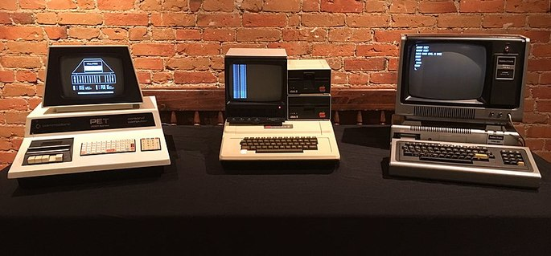
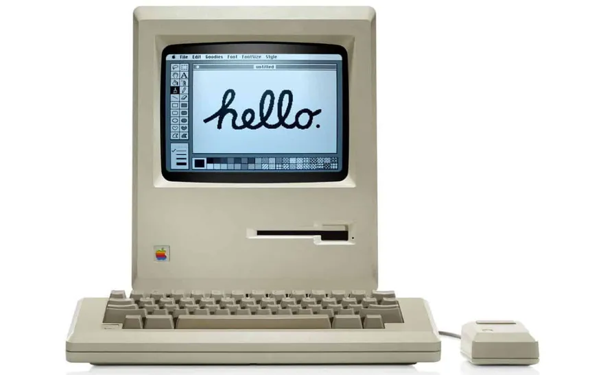
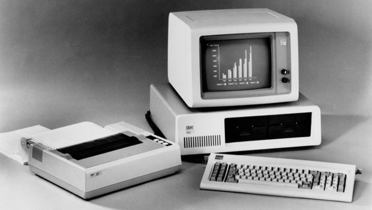
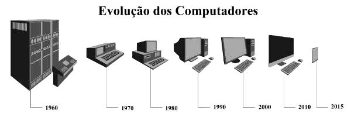

Com o desenvolvimento da tecnologia da informação, os computadores diminuem de tamanho, aumentam a velocidade e capacidade de processamento de dados. São incluídos os microprocessadores com gasto cada vez menor de energia. Nesse período, mais precisamente a partir da década de 90, há uma grande expansão dos computadores pessoais. Nesse período, os computadores deixaram de funcionar somente com circuitos integrados e incorporaram os microprocessadores. Um microprocessador é um circuito integrado, muito mais complexo, capaz de gerenciar todas as funções de um computador. É por isso que também é conhecida como Unidade Central de Processamento ou CPU. Nessa época a popularização dos disquetes permitiu separar o usuário e programador. Foi possível copiar softwares em disquetes e distribuí-los, sem a necessidade de realizar uma programação para cada máquina.

Esses tipos de linguagens diferem das linguagens
de baixo nível por serem muito mais próximas da
linguagem natural (usada por humanos) do que da
linguagem de máquina (código binário). Além disso,
elas são portáteis, portanto, podem ser usados em
outros dispositivos. Um exemplo de computador de
terceira geração foi o UNIVAC 1108, uma atualização
do UNIVAC de primeira geração criado na década de 1950.
A quarta geração de computadores foi caracterizada
também por incluir dois tipos de memória:
Esses tipos de computadores usam linguagens de programação de alto nível, como JavaScript, Python ou Java. A entrada e saída dos dados são feitas através de dispositivos periféricos como teclado, scanner, monitor, CDs, DVDs, etc. Além disso, seu tamanho e a diminuição dos custos de produção fizeram com que esse tipo de computador fosse vendido em massa. Um exemplo de computadores de quarta geração seria o Apple Macintosh e os PCs, como os famosos 286, 386, 486 e 586 da IBM, IBM PC muito populares na década de 1990.


Além disso, surgem os softwares integrados e a partir da virada do milênio, começam a surgir os computadores de mão. Ou seja, os smartphones, iPod, iPad e tablets, que incluem conexão móvel com navegação na web.
